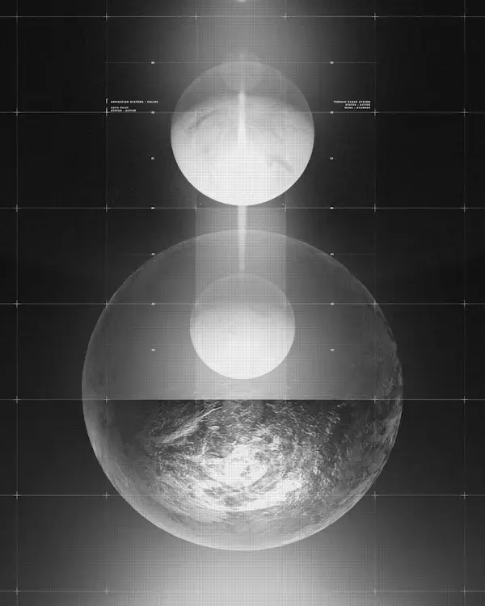
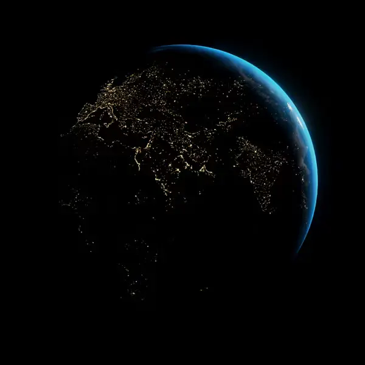

One platform, the whole night sky
From a single guided session to a full observatory partnership — pick the level of access that matches how you want to observe.
Remote telescope sessions
Reserve live time on optical or radio telescopes across the network — from a 20-minute look at the Moon to a multi-hour deep-sky exposure run.
Cloud image stacking
Automatic calibration and stacking so raw frames become a finished image without desktop software.
Sky event streaming
Meteor showers, transits and eclipses, streamed with live commentary from partner observatories.
Guided learning paths
Structured lessons that pair directly with real sessions on the network.
Citizen-science missions
Join structured campaigns tracking variable stars, near-earth objects, and transient events — your data feeds real research partners.
24/7 observatory help
Live chat and troubleshooting support keep every session on track.
Session analytics
Gain deeper insights with breakdowns of sky conditions, targets, and outcomes.
Mobile companion app
Monitor a running session, get clear-sky alerts, and browse your archive from your phone.
Simple pricing, flip for details
Free
2 guided sessions / month
Starter
Two free guided sessions a month, community feed access, and one saved sky chart. Perfect for trying the network.
$19/mo
Unlimited scheduled sessions
Explorer
Unlimited scheduled sessions, full learning path access, cloud stacking, and priority booking windows.
Custom
For partner sites & teams
Observatory
List your own telescope on the network, manage a team account, and access mission-grade data tools.
What actually happens during a session


Your slot enters a live queue
The scheduler checks weather, target visibility, and mount availability before confirming your window.
Frames stream to your browser
Each exposure lands in your session view as it's captured, with live histogram and focus feedback.
Everything lands in your archive
Raw and stacked outputs are saved automatically, tagged by target, date, and instrument.
A network of real, working telescopes
Atacama Dark Sky Node

Kalahari Radio Array

Lowell Ridge Reflector